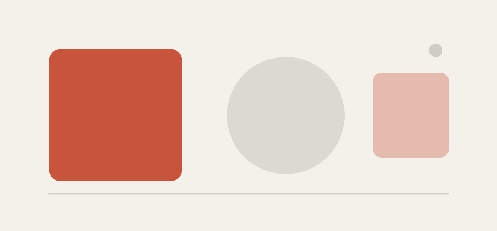

这一篇是「样式说明书」。写文章时能用到的所有排版元素都汇总在这里， 需要时直接复用对应的 HTML。每一小节下面的说明文字本身，就是该样式的实际效果。
标题
文章标题用 <h1>，正文里只用到 <h2>、<h3>、
<h4> 三级。二级标题自带一条细分隔线，用来切分长文章的章节。
三级标题长这样
三级标题用于章节内部的小节，字号比正文略大，不带分隔线。
四级标题长这样
四级标题用作更细的条目说明，颜色稍浅一些。
段落与强调
正文段落使用系统默认的无衬线字体，行高比较宽松，适合长时间阅读。 段落之间留出足够的间距，中文尤其需要这种呼吸感。
需要强调时，可以用 加粗（strong） 表示重要性， 用 高亮（em） 标出句子中的重点片段，用 标记（mark） 突出需要特别留意的字句。此外还可以写上标[1] 做引用标注， 或者用 小号文字 补充说明。
普通的文字链接会带一条浅色下划线，悬停时变为主色。
行内代码用 code 标签，比如 npm install 或者 --accent 这样的变量名。
列表
无序列表
- 第一项，列表符号是主色的小圆点。
- 第二项，可以写得长一点：如果一行放不下会自动换行，缩进对齐，阅读体验和普通段落保持一致。
- 第三项
- 嵌套的子项
- 子项也可以再嵌套
有序列表
- 第一步，先确定要做什么。
- 第二步，把事情拆成可以立刻动手的小块。
- 第三步，从最小的那块开始做。
引用
适合放名言、摘录，或者需要从正文中跳出来的旁白：
我们并非通过看到更多来获得新知，而是通过看清自己看到的东西。
某位记不清名字的作者
引用块内部也可以放多个段落，甚至放列表：
写文章时有三条简单的原则：
- 先说结论。
- 只写自己真的想清楚了的部分。
- 不确定的地方，就说不确定。
代码
行内代码在文字里流动，比如 git commit -m "update"；
代码块则独立成段，右上角有一键复制按钮（鼠标移上去会出现）。
给 pre 标签加上 data-lang 属性，还会在顶部显示语言标签。
// 一个简单的例子
function greet(name) {
const message = `你好，${name}！`;
console.log(message);
return message;
}
greet("世界");# 也可以是 shell 命令
npm run build
git add .
git commit -m "feat: 更新首页"不加 data-lang 的代码块就是这个样子：
没有语言标签，也没有额外的留白，纯代码。表格
表格可以横向滚动，长内容不会把版心撑破：
| 元素 | 标签 | 用途 |
|---|---|---|
| 加粗 | <strong> |
强调重要性 |
| 高亮 | <em> |
句中重点片段 |
| 标记 | <mark> |
需要特别留意的字句 |
| 代码 | <code> |
行内代码、命令、变量名 |
图片
图片默认带一圈浅色描边和圆角，在浅色页面上不至于和背景糊在一起。
配上 figcaption 作为说明文字居中显示。

提示块
用于「注意」「小贴士」「补充说明」这类需要单独拎出来的内容：
提示块左侧有一条主色的竖线，标题是小号大写字母间距， 适合放一行结论或者一句提醒。里面也可以放列表和链接。
键盘按键
介绍快捷键时可以用 kbd 标签，比如
Ctrl + S 保存，或者 Enter 换行。
按键样式有立体感，一眼就能和普通文字区分开。
分隔线
普通的分隔线是一条细细的浅色横线，用于隔开内容块。装饰性的分隔线长这样：
适合用在文章的结尾，或者章节之间的过渡处。
小字与脚注
文章末尾的补充说明用小号浅色文字，比如下面这段。 它比正文小一号，颜色更淡，不抢戏，但认真看还是看得清。
[1]
这是一个脚注的示例。上标 [1] 点击会跳到这里。
实际写作时把链接的 href 指向脚注的 id 即可。
以上就是全部可用样式。它们都定义在 assets/css/style.css 里，
想调整配色、字号或者间距，改那一个文件就行。